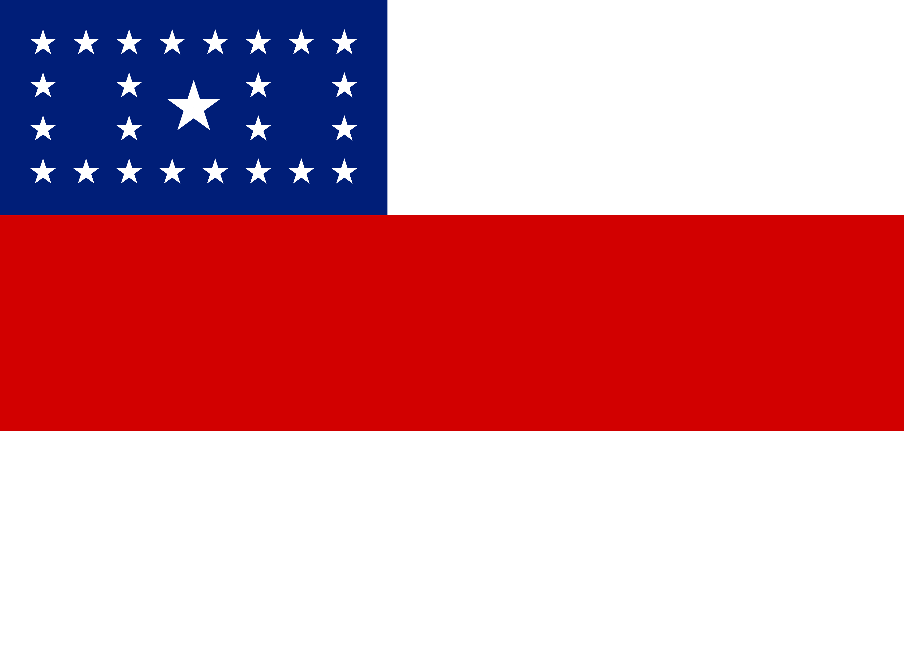
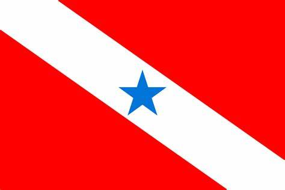
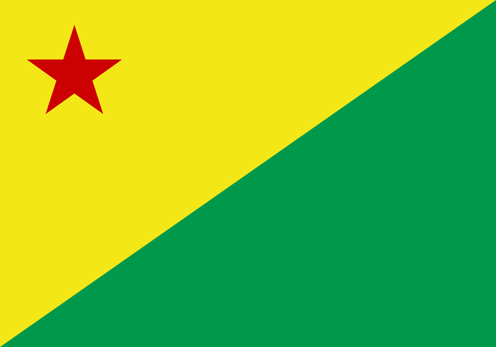
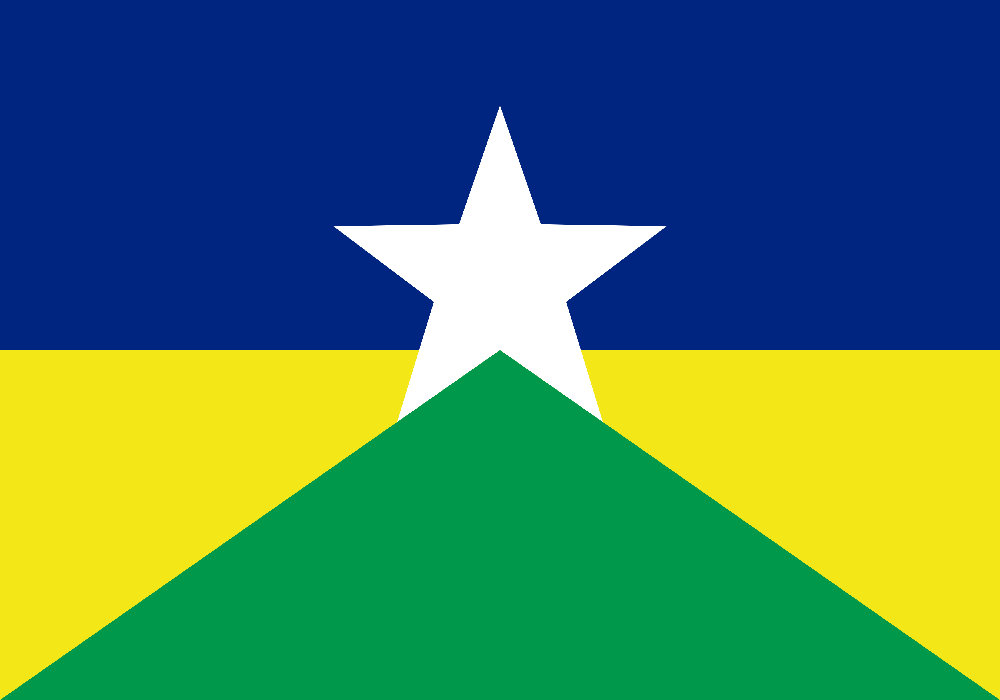
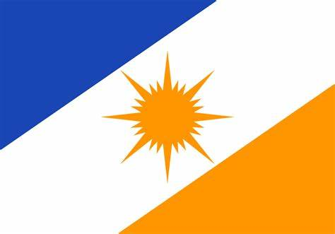
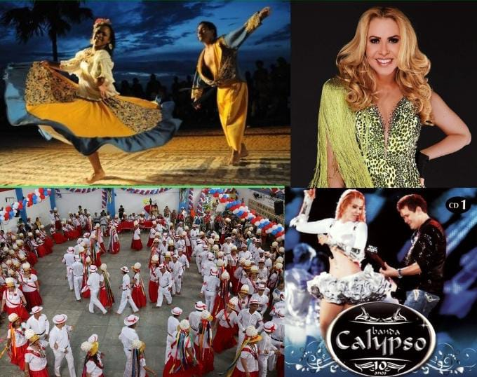

Região Norte

Roraima (Boa Vista)

Amapá (Macapá)

Amazonas (Manaus)
Pará (Belém)
Acre (Rio Branco)
Rondônia (Porto Velho)
Tocantins (Palmas)

A cultura da região norte do Brasil é vasta e rica, sendo fortemente influenciada por povos indígenas, europeus, africanos e migrantes. Sendo uma região com uma população muito miscigenada, a região Norte apresenta uma variedade de expressões culturais, como costumes, crenças, festas folclóricas, comidas, danças, etc. Os estados da região são: Acre, Amapá, Amazonas, Pará, Rondônia, Roraima e Tocantins. Existem muitas festividades na região, e são amplamente influenciadas pela cultura dos povos indígenas e da igreja Cristã, algumas dessas festas nortistas são: Círio de Nazaré, que ocorre no Pará em homenagem à Nossa Senhora de Nazaré e ocorre em Outubro, Festival de Parintins no Amazonas em Julho, consiste em uma competição entre dois Bois, existem muitas outras também como: Congo ou Congada, Folia de Reis, Festa do Divino, Cavalhada, Festa Junina.
Pode parecer estranho para outras regiões do Brasil que comem o açaí com açúcar, xarope de guaraná e banana como se fosse um sorvete, mas na região norte o açaí é consumido geralmente com peixes e tapioca em flocos, como um molho, sendo até chamado de o verdadeiro e tradicional açaí.
É um prato mais típico no Pará, quiabo, temperos e camarão formam o simples mas delicioso prato caruru, é um ótimo acompanhamento para o arroz por ser um prato neutro, geralmente é engrossado com farinha de mandioca, o que o diferencia do caruru baiano.

No norte do Brasil, a costela de tambaqui é muito consumida, mas uma parte do peixe é muito valorizada, a costela, alguns podem achar estranho falar sobre a costela do peixe, mas a do tambaqui é imperdível, geralmente servida com um molho de pimenta que melhora sua experiência.
Algumas músicas típicas da região norte são: Carimbó, Marujada e Calypso. O Carimbó é uma manifestação indígena e tem influência do batuque africano, e também das músicas folclórica lusitanas, com castanholas na marcação das canções. A Marujada surgiu de uma festa em louvor a São Benedito, os instrumentos usados para a Marujada são: o tambor, a cuíca, os pandeiros, a rebeca, a viola, o cavaquinho e o violino. O Calypso faz muito sucesso no Pará, é uma música agitada e divertida, com influência afro-caribenha. Artistas muito famosos da música Calypso são Joelma e Chimbinha da Banda Calypso, suas músicas tem diversas referências da região norte, mas expecificamente do Pará, de onde eles vieram.
O Curupira é um dos personagens mais famosos do folclore brasileiro, e é conhecido como uma criatura mítica que protege a selva. Sua lenda vem dos povos indígenas que são muito famosos no norte do Brasil, especialmente na região amazônica e no estado do Pará e é mencionado desde o século XVI. O escolhemos como mascote por conta de seu contexto histórico no norte do Brasil e pelo o que ele representa ao correr mal que tenta invadir violar a floresta amazônica para longe
Criamos uma bandeira que representasse a região norte do Brasil, nela, usamos as cores mais usadas nas bandeiras dos estados que compõem a região que são azul claro, verde e amarelo. Com as estrelas, fazendo referência à bandeira do Brasil, usamos para representar cada um dos sete estados da região norte.